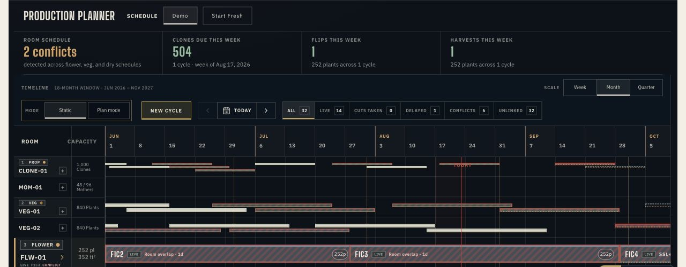

The plan and the floor told different stories
Schedules, crew conversations, and compliance records described the same facility differently. Every delay required someone to reconstruct what changed and who needed to know.
Keep production plans, floor activity, inventory, and sellable dates in sync.
Cultivo’s AI agent connects crew updates to the production plan, proposes changes, and updates the record after human confirmation in Slack or WhatsApp.

The AI agent reads plain-language crew updates in the context of the production schedule. When a harvest drifts, it proposes a date change and the downstream adjustments. A person confirms before Cultivo applies the update, records the approval, and tells affected teams what moved.
Compliance decisions stay with your team.
Quote from a recorded operator interview, 2026. Role kept anonymous.
Schedules, crew conversations, and compliance records described the same facility differently. Every delay required someone to reconstruct what changed and who needed to know.
Across 16 months, Cultivo tracked 200+ batches and 117 strains, then exported 50,316 clean ledger rows for compliance on the first pass.
The Production Planner is now in pilot at a Canadian research facility with a cultivation-science consultancy.
Plan cycles against real room windows, mother capacity, and downstream constraints. When work moves, see every affected date and conflict before committing the change.
Collect floor updates and send morning briefs in Slack or WhatsApp. Every change is confirmed by a person and recorded.
Maintain seed-to-sale chain of custody with mass-balance checks and evidence behind every stage change.
Capture propagation, waste, testing custody, and physical handoffs at the moment the work happens.
See when harvest, defoliation, transplant, and post-production will compete for the same people and capacity.
Track cost per gram, labor per batch, throughput per week, and plan-versus-actual revenue timing from the same operating record.
Bring one real planning, handoff, inventory, or compliance problem. In 20 minutes, we will map how Cultivo would handle it and tell you plainly whether a pilot is worth pursuing.
Rooms, roles, day counts, handoffs, constraints, and the decisions that currently go stale.
The planner models your next cycle while the agent captures what changes.
Compare plan against actual, review what changed, and decide whether Cultivo earned a larger role.